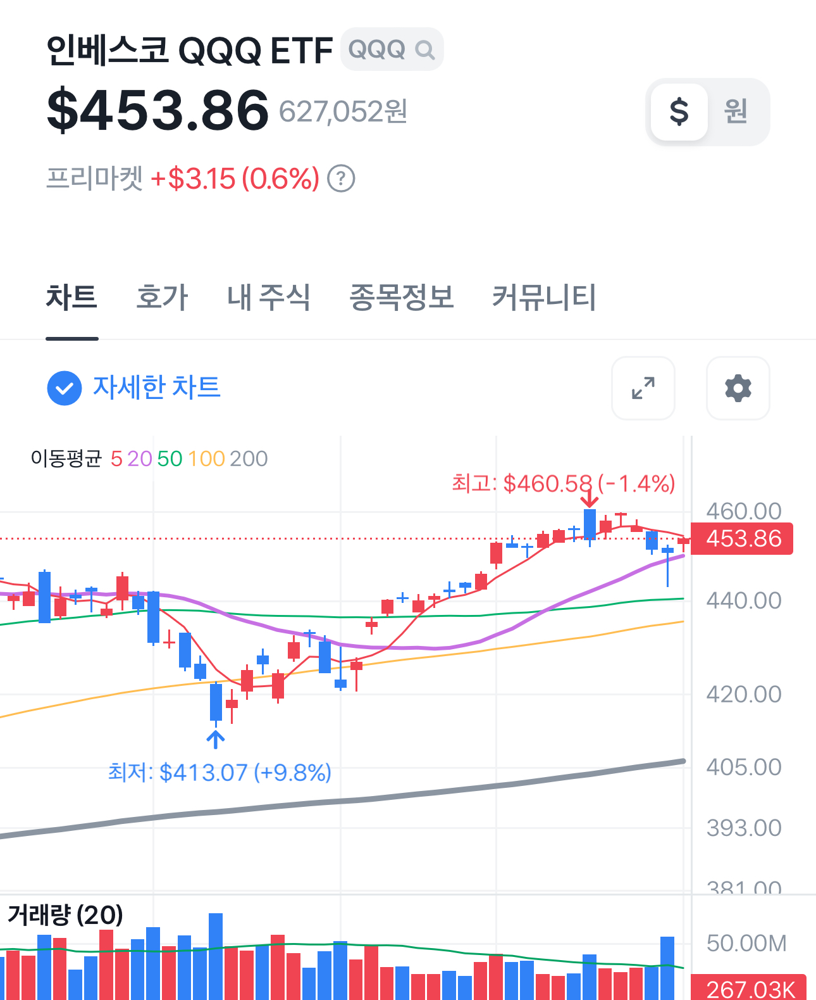

ETF는 기술적 분석이 의미가 있을까?
ETF에 기술적 분석이라는 것을 하는 것이 과연 의미가 있을까? 지금까지는 ETF 매매 때에도 단일종목과 비슷하게 늘 차트를 보며 가격이 적당히 낮아졌다 싶을 때 분할매수로 진입하고 적당히 높은 가격에 분할매도로 나가는 게 당연하다고 생각했었는데 문득 이게 맞나 싶은 생각이 들었다.
기술적 분석에서 가장 대표적인 것은 지지선과 저항선이다. 이 두 선은 차트에 나타나는 심리를 분석하기 위한 개념이다. 지지선은 많은 사람들이 많이 산 가격대를 지키려고 하는 일종의 바닥으로 보고, 사람들이 많이 물린 가격대에서는 팔려고 혈안이라 일종의 천정 처럼 취급되는 저항선이 있다. 여기에 이동평균선이 지지나 저항선의 역할을 하기도 한다.

ETF는 상장 지수 펀드다. 지수는 정확하진 않겠지만 대충 구성 종목들의 시가총액의 합을 어떤 식으로 평균내서 만들어진 것일 테다. 결국 ETF의 구성 종목들의 각각의 기술적 분석은 당연히 독립적인 의미를 가지게 된다. 따라서 각 종목의 지지와 저항은 분명 의미가 있을 것이다.
하지만 종목이 여럿 모여서 만들어지는 ETF의 차트는 과연 지지선과 저항선 그리고 이동평균선이 무슨 의미가 있을까. 어떤 한 종목에 거래대금이 몰려서 저항을 뚫고 올라가거나 지지를 뚫고 내려가도 그 종목이 포함된 ETF의 차트에는 해당 차트의 지지와 저항과는 관계 없는 모습이 나타날 것이다.
물론 SPY나 QQQ 같은 초대형 ETF라면 패시브 자금의 무지막지한 힘이 그 자체로 각 종목의 지지와 저항에 간섭하게 될 수는 분명이 있을 거다. 하지만 거기에 비하면 아주 초라한 국내 섹터 ETF나 테마형 ETF는 기술적 분석이 의미가 없다고 보는게 맞을 지도 모르겠다.
그래서 QQQ나 SPY를 제외한 ETF는 차트를 볼 필요가 없냐고 한다면 참 답하기 어려운 일이긴 하다. 솔직히 차트에서 가격이 낮게 나오면 사고 싶고 높아 보이면 안 들어가거나 팔고 싶기 마련이다.
의미가 있는지 답이 안 나온다. 포기했다. 그냥 ETF 거래는 QQQ 같은 큰 시장 위주로만 매매하면 의미가 있든 없든 괜찮지 않을까 싶다.